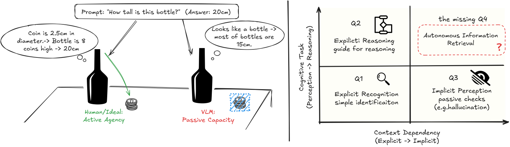
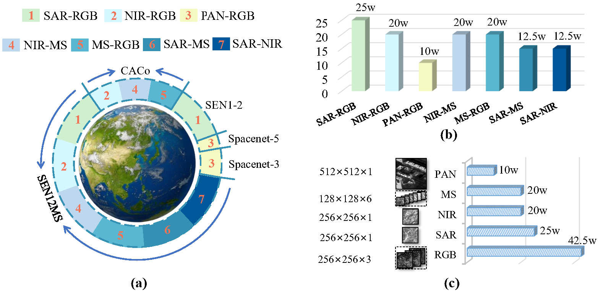
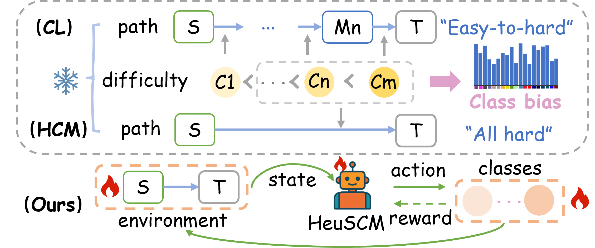
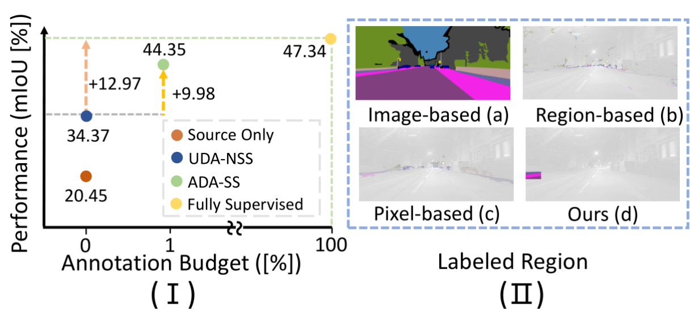
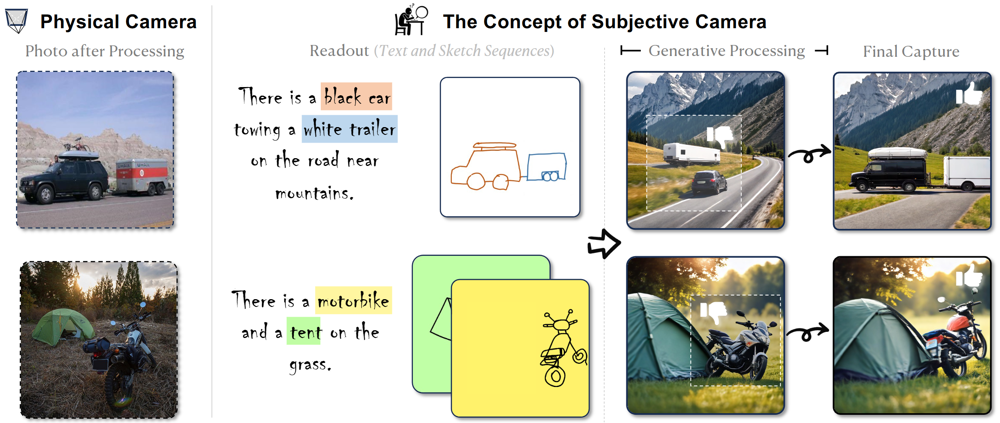
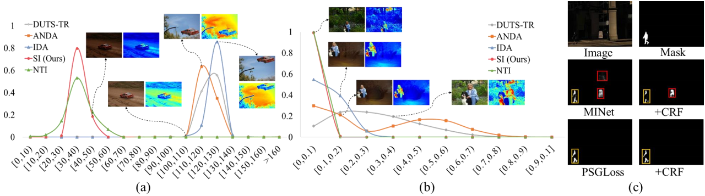
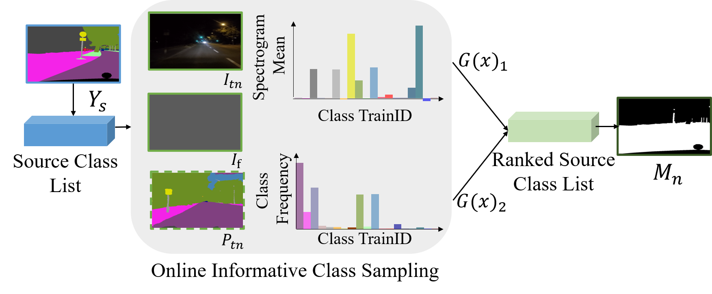
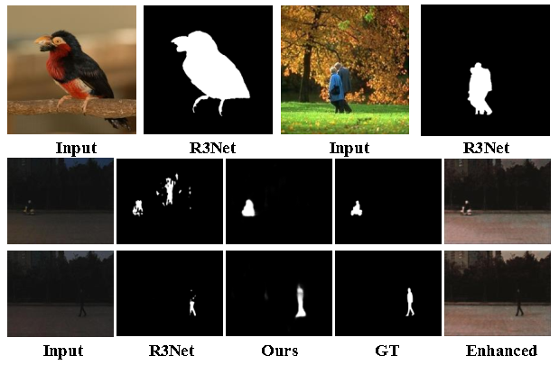
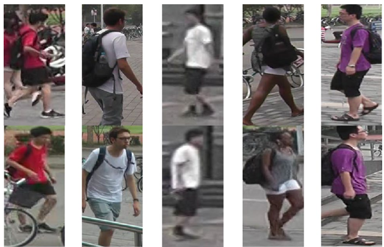

My name is Siqin Wang, I am currently a Postdoctoral Researcher at the School of Computer Science, Wuhan University (武汉大学). My postdoctoral advisor is Professor Zheng Wang (王正). And I obtained my Ph.D. degree under the supervision of Professor Xin Xu (徐新) in 2025.6.
My research interests lie in adverse weather scene understanding, including low-altitude remote sensing and autonomous driving fields. If you are seeking any form of academic cooperation on adverse scene understanding, please feel free to contact me at shiqinwang@whu.edu.cn.

Yizhao Huang*, Haoyang Chen*, Shiqin Wang*，Pohsun Huang*, Jiayuan Li, Haoyuan Du, Yandong Shi Zheng Wang† Zhixiang Wang†
ICML 2026

Haoyang Chen, Jing Zhang, Hebaixu Wang, Shiqin Wang, Pohsun Huang, Jiayuan Li, Haonan Guo, Di Wang, Zheng Wang, Bo Du
ICML 2026

Shiqin Wang Haoyang Chen Huaizhou Huang Yinkan He Dongfang Sun Xiaoqing Chen Xingyu Liu Zheng Wang†
CVPR 2026 Highlight

Shiqin Wang Xin Xu† Haoyang Chen Kui Jiang Zheng Wang
AAAA 2025

Haoyang Chen, Dongfang Sun, Caoyuan Ma, Shiqin Wang, Kewei Zhang, Zheng Wang, Zhixiang Wang
ICCV 2025

Shiqin Wang Xin Xu† Haoyang Chen Kui Jiang Zheng Wang Ke Tang
TETCI 2024

Shiqin Wang Xin Xu† Xianzheng Ma Kui Jiang Zheng Wang
ACM MM 2023 Oral (Top 4.5%)

Xin Xu† Shiqin Wang Zheng Wang Xiaolong Zhang Ruimin Hu
TOMM 2021

Shiqin Wang Xin Xu† Lei Liu Jing Tian
Journal of Real-Time Image Processing 2020